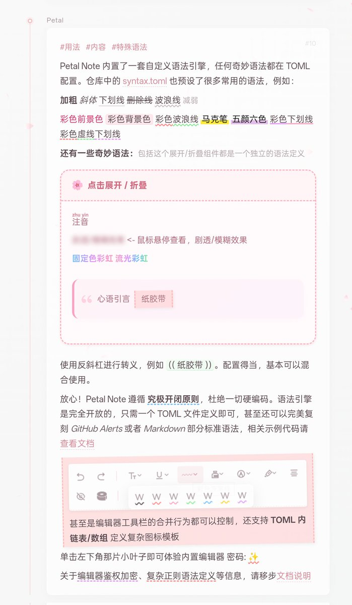
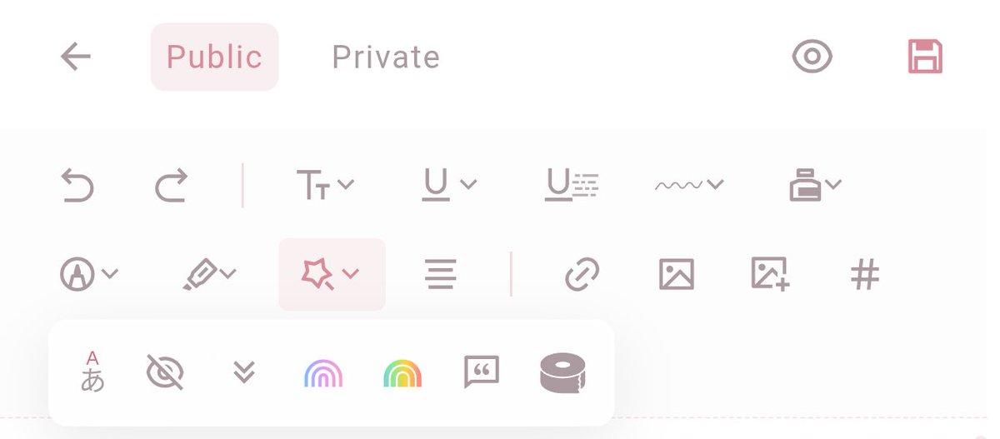
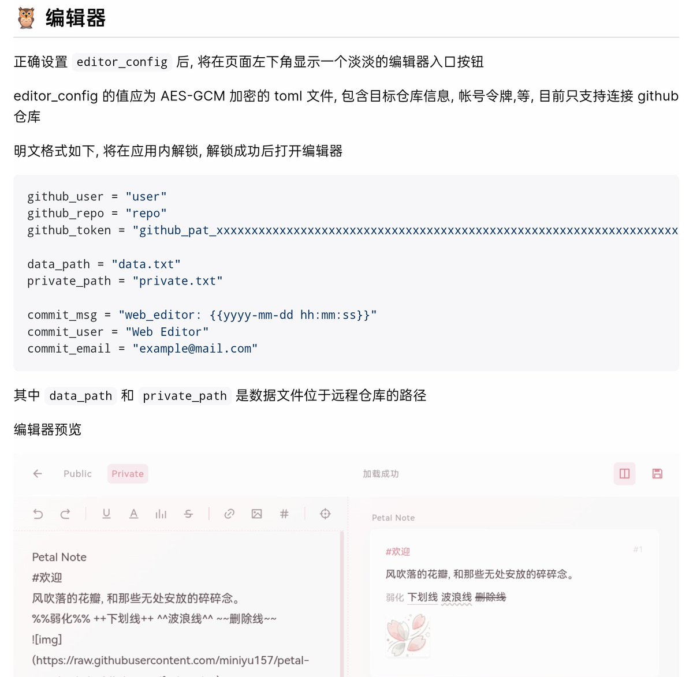
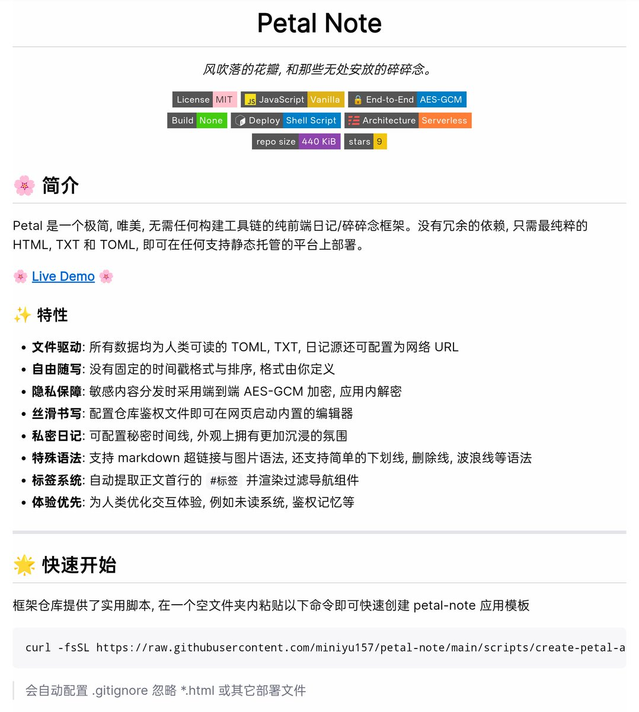

新概念富文本编辑器/渲染器，一切奇妙语法、按钮图标模板，甚至是工具栏的合并行为都在 TOML 里定义。设计了一套跨技术栈的抽象，落地究极开闭原则 (OCP)
仓库: https://t.co/8o6KRZBoM4
碎碎念：两个星期140次提交，还写了2400个汉字的文档，我在干什么QAQ

仓库: https://t.co/8o6KRZBoM4
碎碎念：两个星期140次提交，还写了2400个汉字的文档，我在干什么QAQ




为了树洞的小小需求搞了一整套还算成熟的架构，一个星期内60多次提交（虽然依旧有很多水的提交ww
利用Github API和军用级加密算法实现的网页编辑器也有了，这下咱的小项目变成了真正的serverless无头服务器，部署也超级简单QwQ
仓库/文档: https://t.co/8o6KRZBoM4
在线预览: https://t.co/4sIGs6YRvK https://t.co/6DSLZoS7tu https://t.co/cGXsb9vYd3
利用Github API和军用级加密算法实现的网页编辑器也有了，这下咱的小项目变成了真正的serverless无头服务器，部署也超级简单QwQ
仓库/文档: https://t.co/8o6KRZBoM4
在线预览: https://t.co/4sIGs6YRvK https://t.co/6DSLZoS7tu https://t.co/cGXsb9vYd3